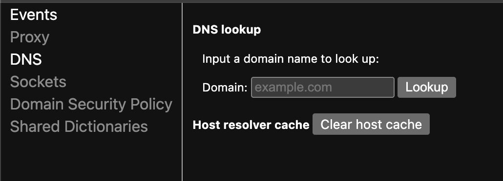
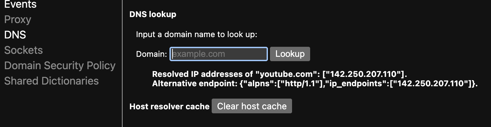
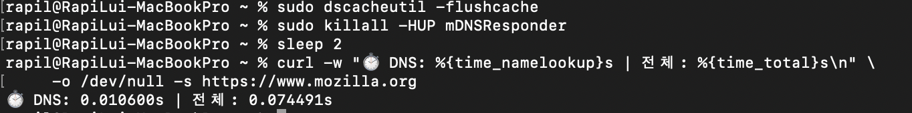
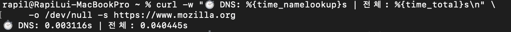
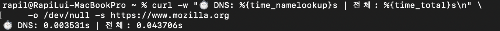
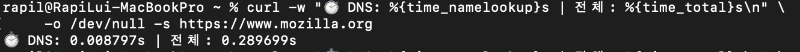

## 오늘의 목표
브라우저와 애플리케이션이 자체 DNS 캐시를 어떻게 관리하는지 이해하고 확인한다.
1. 크롬 브라우저 DNS 캐시 확인
크롬 브라우저의 DNS 캐시는 브라우저 설정에서 확인할 수 있다.
아래 주소를 크롬 브라우저에 입력하면 DNS 캐시 확인 페이지로 이동한다.
chrome://net-internals/#dns
입력란에 캐시를 확인하고자 하는 도메인 주소를 입력하고 Enter 키를 누르면 캐시 확인 결과가 표시된다.
나의 경우 youtube.com 을 입력하였다.

결과를 보면 youtube.com 의 DNS 캐시가 표시된다.
캐시 확인 결과는 다음과 같다.

결과를 해석하면 다음과 같다.
Resolved IP addresses of "youtube.com": ["142.250.206.206"].
- youtube.com 의 DNS 캐시는 142.250.206.206 이다.
Alternative endpoint: {"alpns":["http/1.1"],"ip_endpoints":["142.250.206.206"]}.
- youtube.com 의 대체 엔드포인트는 http/1.1 과 142.250.206.206 이다.
이제 curl 명령어를 이용하여 youtube.com 의 DNS 조회 시간을 측정해보자.
실습 스크립트는 아래와 같다.
# 1. 캐시 완전 초기화
echo "[1단계] DNS 캐시 비우기..."
sudo dscacheutil -flushcache
sudo killall -HUP mDNSResponder
sleep 2
# 2. 절대 방문 안 한 도메인으로 첫 조회
echo "[2단계] 첫 조회 (캐시 없음 - 느림 예상):"
curl -w "⏱️ DNS: %{time_namelookup}s | 전체: %{time_total}s\n" \
-o /dev/null -s https://www.mozilla.org
echo ""

# 3. 즉시 재조회
echo "[3단계] 두번째 조회 (캐시 있음 - 빠름 예상):"
curl -w "⏱️ DNS: %{time_namelookup}s | 전체: %{time_total}s\n" \
-o /dev/null -s https://www.mozilla.org
echo ""

# 4. 한번 더
echo "[4단계] 세번째 조회 (캐시 있음):"
curl -w "⏱️ DNS: %{time_namelookup}s | 전체: %{time_total}s\n" \
-o /dev/null -s https://www.mozilla.org
echo ""

# 5. 다시 캐시 비우고 확인
echo "[5단계] 캐시 다시 비우기"
sudo dscacheutil -flushcache
sudo killall -HUP mDNSResponder
sleep 2
echo "[6단계] 캐시 비운 후 조회 (다시 느려짐):"
curl -w "⏱️ DNS: %{time_namelookup}s | 전체: %{time_total}s\n" \
-o /dev/null -s https://www.mozilla.org

결과
캐시가 있으면 DNS 시간이 10배 이상 빨라진다.